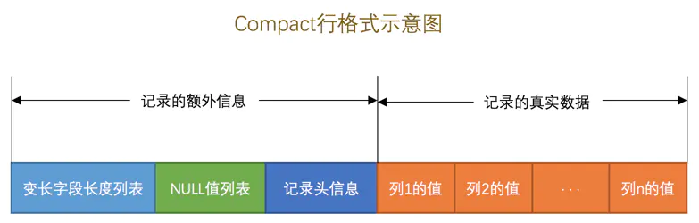

InnoDB记录存储结构
标签： MySQL是怎样运行的
准备工作
到现在为止，MySQL对于我们来说还是一个黑盒，我们只负责使用客户端发送请求并等待服务器返回结果，表中的数据到底存到了哪里？以什么格式存放的？MySQL是以什么方式来访问的这些数据？这些问题我们统统不知道，对于未知领域的探索向来就是社会主义核心价值观中的一部分，作为新一代社会主义接班人，不把它们搞懂怎么支援祖国建设呢？
我们前边唠叨请求处理过程的时候提到过，MySQL服务器上负责对表中数据的读取和写入工作的部分是存储引擎，而服务器又支持不同类型的存储引擎，比如InnoDB、MyISAM、Memory啥的，不同的存储引擎一般是由不同的人为实现不同的特性而开发的，真实数据在不同存储引擎中存放的格式一般是不同的，甚至有的存储引擎比如Memory都不用磁盘来存储数据，也就是说关闭服务器后表中的数据就消失了。由于InnoDB是MySQL默认的存储引擎，也是我们最常用到的存储引擎，我们也没有那么多时间去把各个存储引擎的内部实现都看一遍，所以本集要唠叨的是使用InnoDB作为存储引擎的数据存储结构，了解了一个存储引擎的数据存储结构之后，其他的存储引擎都是依葫芦画瓢，等我们用到了再说哈～
InnoDB页简介
InnoDB是一个将表中的数据存储到磁盘上的存储引擎，所以即使关机后重启我们的数据还是存在的。而真正处理数据的过程是发生在内存中的，所以需要把磁盘中的数据加载到内存中，如果是处理写入或修改请求的话，还需要把内存中的内容刷新到磁盘上。而我们知道读写磁盘的速度非常慢，和内存读写差了几个数量级，所以当我们想从表中获取某些记录时，InnoDB存储引擎需要一条一条的把记录从磁盘上读出来么？不，那样会慢死，InnoDB采取的方式是：将数据划分为若干个页，以页作为磁盘和内存之间交互的基本单位，InnoDB中页的大小一般为 16 KB。也就是在一般情况下，一次最少从磁盘中读取16KB的内容到内存中，一次最少把内存中的16KB内容刷新到磁盘中。
InnoDB行格式
我们平时是以记录为单位来向表中插入数据的，这些记录在磁盘上的存放方式也被称为行格式或者记录格式。设计InnoDB存储引擎的大叔们到现在为止设计了4种不同类型的行格式，分别是Compact、Redundant、Dynamic和Compressed行格式，随着时间的推移，他们可能会设计出更多的行格式，但是不管怎么变，在原理上大体都是相同的。
指定行格式的语法
我们可以在创建或修改表的语句中指定行格式：
CREATE TABLE 表名 (列的信息) ROW_FORMAT=行格式名称
ALTER TABLE 表名 ROW_FORMAT=行格式名称
比如我们在xiaohaizi数据库里创建一个演示用的表record_format_demo，可以这样指定它的行格式：
mysql> USE xiaohaizi;
Database changed
mysql> CREATE TABLE record_format_demo (
-> c1 VARCHAR(10),
-> c2 VARCHAR(10) NOT NULL,
-> c3 CHAR(10),
-> c4 VARCHAR(10)
-> ) CHARSET=ascii ROW_FORMAT=COMPACT;
Query OK, 0 rows affected (0.03 sec)
可以看到我们刚刚创建的这个表的行格式就是Compact，另外，我们还显式指定了这个表的字符集为ascii，因为ascii字符集只包括空格、标点符号、数字、大小写字母和一些不可见字符，所以我们的汉字是不能存到这个表里的。我们现在向这个表中插入两条记录：
mysql> INSERT INTO record_format_demo(c1, c2, c3, c4) VALUES('aaaa', 'bbb', 'cc', 'd'), ('eeee', 'fff', NULL, NULL);
Query OK, 2 rows affected (0.02 sec)
Records: 2 Duplicates: 0 Warnings: 0
现在表中的记录就是这个样子的：
mysql> SELECT * FROM record_format_demo;
+------+-----+------+------+
| c1 | c2 | c3 | c4 |
+------+-----+------+------+
| aaaa | bbb | cc | d |
| eeee | fff | NULL | NULL |
+------+-----+------+------+
2 rows in set (0.00 sec)
mysql>
演示表的内容也填充好了，现在我们就来看看各个行格式下的存储方式到底有啥不同吧～
COMPACT行格式
废话不多说，直接看图：

大家从图中可以看出来，一条完整的记录其实可以被分为记录的额外信息和记录的真实数据两大部分，下边我们详细看一下这两部分的组成。
记录的额外信息
这部分信息是服务器为了描述这条记录而不得不额外添加的一些信息，这些额外信息分为3类，分别是变长字段长度列表、NULL值列表和记录头信息，我们分别看一下。
变长字段长度列表
我们知道MySQL支持一些变长的数据类型，比如VARCHAR(M)、VARBINARY(M)、各种TEXT类型，各种BLOB类型，我们也可以把拥有这些数据类型的列称为变长字段，变长字段中存储多少字节的数据是不固定的，所以我们在存储真实数据的时候需要顺便把这些数据占用的字节数也存起来，这样才不至于把MySQL服务器搞懵，所以这些变长字段占用的存储空间分为两部分：
- 真正的数据内容
- 占用的字节数
在Compact行格式中，把所有变长字段的真实数据占用的字节长度都存放在记录的开头部位，从而形成一个变长字段长度列表，各变长字段数据占用的字节数按照列的顺序逆序存放，我们再次强调一遍，是逆序存放！
我们拿record_format_demo表中的第一条记录来举个例子。因为record_format_demo表的c1、c2、c4列都是VARCHAR(10)类型的，也就是变长的数据类型，所以这三个列的值的长度都需要保存在记录开头处，因为record_format_demo表中的各个列都使用的是ascii字符集，所以每个字符只需要1个字节来进行编码，来看一下第一条记录各变长字段内容的长度：
| 列名 | 存储内容 | 内容长度（十进制表示） | 内容长度（十六进制表示） |
|---|---|---|---|
c1 | 'aaaa' | 4 | 0x04 |
c2 | 'bbb' | 3 | 0x03 |
c4 | 'd' | 1 | 0x01 |
又因为这些长度值需要按照列的逆序存放，所以最后变长字段长度列表的字节串用十六进制表示的效果就是（各个字节之间实际上没有空格，用空格隔开只是方便理解）：
01 03 04
把这个字节串组成的变长字段长度列表填入上边的示意图中的效果就是：
由于第一行记录中c1、c2、c4列中的字符串都比较短，也就是说内容占用的字节数比较小，用1个字节就可以表示，但是如果变长列的内容占用的字节数比较多，可能就需要用2个字节来表示。具体用1个还是2个字节来表示真实数据占用的字节数，InnoDB有它的一套规则，我们首先声明一下W、M和L的意思：
-
假设某个字符集中表示一个字符最多需要使用的字节数为
W，也就是使用SHOW CHARSET语句的结果中的Maxlen列，比方说utf8字符集中的W就是3，gbk字符集中的W就是2，ascii字符集中的W就是1。 -
对于变长类型
VARCHAR(M)来说，这种类型表示能存储最多M个字符（注意是字符不是字节），所以这个类型能表示的字符串最多占用的字节数就是M×W。 -
假设它实际存储的字符串占用的字节数是
L。
所以确定使用1个字节还是2个字节表示真正字符串占用的字节数的规则就是这样：
-
如果
M×W <= 255，那么使用1个字节来表示真正字符串占用的字节数。!也就是说InnoDB在读记录的变长字段长度列表时先查看表结构，如果某个变长字段允许存储的最大字节数不大于255时，可以认为只使用1个字节来表示真正字符串占用的字节数。 -
如果
M×W > 255，则分为两种情况：-
如果
L <= 127，则用1个字节来表示真正字符串占用的字节数。 -
如果
L > 127，则用2个字节来表示真正字符串占用的字节数。
!InnoDB在读记录的变长字段长度列表时先查看表结构，如果某个变长字段允许存储的最大字节数大于255时，该怎么区分它正在读的某个字节是一个单独的字段长度还是半个字段长度呢？设计InnoDB的大叔使用该字节的第一个二进制位作为标志位：如果该字节的第一个位为0，那该字节就是一个单独的字段长度（使用一个字节表示不大于127的二进制的第一个位都为0），如果该字节的第一个位为1，那该字节就是半个字段长度。 对于一些占用字节数非常多的字段，比方说某个字段长度大于了16KB，那么如果该记录在单个页面中无法存储时，InnoDB会把一部分数据存放到所谓的溢出页中（我们后边会唠叨），在变长字段长度列表处只存储留在本页面中的长度，所以使用两个字节也可以存放下来。 -
总结一下就是说：如果该可变字段允许存储的最大字节数（M×W）超过255字节并且真实存储的字节数（L）超过127字节，则使用2个字节，否则使用1个字节。
另外需要注意的一点是，变长字段长度列表中只存储值为 非NULL 的列内容占用的长度，值为 NULL 的列的长度是不储存的 。也就是说对于第二条记录来说，因为c4列的值为NULL，所以第二条记录的变长字段长度列表只需要存储c1和c2列的长度即可。其中c1列存储的值为'eeee'，占用的字节数为4，c2列存储的值为'fff'，占用的字节数为3。数字4可以用1个字节表示，3也可以用1个字节表示，所以整个变长字段长度列表共需2个字节。填充完变长字段长度列表的两条记录的对比图如下：
!小贴士：
并不是所有记录都有这个 变长字段长度列表 部分，比方说表中所有的列都不是变长的数据类型的话，这一部分就不需要有。
NULL值列表
我们知道表中的某些列可能存储NULL值，如果把这些NULL值都放到记录的真实数据中存储会很占地方，所以Compact行格式把这些值为NULL的列统一管理起来，存储到NULL值列表中，它的处理过程是这样的：
-
首先统计表中允许存储
NULL的列有哪些。我们前边说过，主键列、被
NOT NULL修饰的列都是不可以存储NULL值的，所以在统计的时候不会把这些列算进去。比方说表record_format_demo的3个列c1、c3、c4都是允许存储NULL值的，而c2列是被NOT NULL修饰，不允许存储NULL值。 -
如果表中没有允许存储 NULL 的列，则 NULL值列表 也不存在了，否则将每个允许存储
NULL的列对应一个二进制位，二进制位按照列的顺序逆序排列，二进制位表示的意义如下：- 二进制位的值为
1时，代表该列的值为NULL。 - 二进制位的值为
0时，代表该列的值不为NULL。
因为表
record_format_demo有3个值允许为NULL的列，所以这3个列和二进制位的对应关系就是这样：再一次强调，二进制位按照列的顺序逆序排列，所以第一个列
c1和最后一个二进制位对应。 - 二进制位的值为
-
MySQL规定NULL值列表必须用整数个字节的位表示，如果使用的二进制位个数不是整数个字节，则在字节的高位补0。表
record_format_demo只有3个值允许为NULL的列，对应3个二进制位，不足一个字节，所以在字节的高位补0，效果就是这样：以此类推，如果一个表中有9个允许为
NULL，那这个记录的NULL值列表部分就需要2个字节来表示了。
知道了规则之后，我们再返回头看表record_format_demo中的两条记录中的NULL值列表应该怎么储存。因为只有c1、c3、c4这3个列允许存储NULL值，所以所有记录的NULL值列表只需要一个字节。
-
对于第一条记录来说，
c1、c3、c4这3个列的值都不为NULL，所以它们对应的二进制位都是0，画个图就是这样：所以第一条记录的
NULL值列表用十六进制表示就是：0x00。 -
对于第二条记录来说，
c1、c3、c4这3个列中c3和c4的值都为NULL，所以这3个列对应的二进制位的情况就是：所以第二条记录的
NULL值列表用十六进制表示就是：0x06。
所以这两条记录在填充了NULL值列表后的示意图就是这样：
记录头信息
除了变长字段长度列表、NULL值列表之外，还有一个用于描述记录的记录头信息，它是由固定的5个字节组成。5个字节也就是40个二进制位，不同的位代表不同的意思，如图：
这些二进制位代表的详细信息如下表：
| 名称 | 大小（单位：bit） | 描述 |
|---|---|---|
预留位1 | 1 | 没有使用 |
预留位2 | 1 | 没有使用 |
delete_mask | 1 | 标记该记录是否被删除 |
min_rec_mask | 1 | B+树的每层非叶子节点中的最小记录都会添加该标记 |
n_owned | 4 | 表示当前记录拥有的记录数 |
heap_no | 13 | 表示当前记录在记录堆的位置信息 |
record_type | 3 | 表示当前记录的类型，0表示普通记录，1表示B+树非叶子节点记录，2表示最小记录，3表示最大记录 |
next_record | 16 | 表示下一条记录的相对位置 |
大家不要被这么多的属性和陌生的概念给吓着，我这里只是为了内容的完整性把这些位代表的意思都写了出来，现在没必要把它们的意思都记住，记住也没啥用，现在只需要看一遍混个脸熟，等之后用到这些属性的时候我们再回过头来看。
因为我们并不清楚这些属性详细的用法，所以这里就不分析各个属性值是怎么产生的了，之后我们遇到会详细看的。所以我们现在直接看一下record_format_demo中的两条记录的头信息分别是什么：
!小贴士：
再一次强调，大家如果看不懂记录头信息里各个位代表的概念千万别纠结，我们后边会说的～
记录的真实数据
对于record_format_demo表来说，记录的真实数据除了c1、c2、c3、c4这几个我们自己定义的列的数据以外，MySQL会为每个记录默认的添加一些列（也称为隐藏列），具体的列如下：
| 列名 | 是否必须 | 占用空间 | 描述 |
|---|---|---|---|
row_id | 否 | 6字节 | 行ID，唯一标识一条记录 |
transaction_id | 是 | 6字节 | 事务ID |
roll_pointer | 是 | 7字节 | 回滚指针 |
!小贴士：
实际上这几个列的真正名称其实是：DB_ROW_ID、DB_TRX_ID、DB_ROLL_PTR，我们为了美观才写成了row_id、transaction_id和roll_pointer。
这里需要提一下InnoDB表对主键的生成策略：优先使用用户自定义主键作为主键，如果用户没有定义主键，则选取一个Unique键作为主键，如果表中连Unique键都没有定义的话，则InnoDB会为表默认添加一个名为row_id的隐藏列作为主键。所以我们从上表中可以看出：InnoDB存储引擎会为每条记录都添加 transaction_id 和 roll_pointer 这两个列，但是 row_id 是可选的（在没有自定义主键以及Unique键的情况下才会添加该列）。这些隐藏列的值不用我们操心，InnoDB存储引擎会自己帮我们生成的。
因为表record_format_demo并没有定义主键，所以MySQL服务器会为每条记录增加上述的3个列。现在看一下加上记录的真实数据的两个记录长什么样吧：
看这个图的时候我们需要注意几点：
-
表
record_format_demo使用的是ascii字符集，所以0x61616161就表示字符串'aaaa'，0x626262就表示字符串'bbb'，以此类推。 -
注意第1条记录中
c3列的值，它是CHAR(10)类型的，它实际存储的字符串是：'cc'，而ascii字符集中的字节表示是'0x6363'，虽然表示这个字符串只占用了2个字节，但整个c3列仍然占用了10个字节的空间，除真实数据以外的8个字节的统统都用空格字符填充，空格字符在ascii字符集的表示就是0x20。 -
注意第2条记录中
c3和c4列的值都为NULL，它们被存储在了前边的NULL值列表处，在记录的真实数据处就不再冗余存储，从而节省存储空间。
CHAR(M)列的存储格式
record_format_demo表的c1、c2、c4列的类型是VARCHAR(10)，而c3列的类型是CHAR(10)，我们说在Compact行格式下只会把变长类型的列的长度逆序存到变长字段长度列表中，就像这样：
但是这只是因为我们的record_format_demo表采用的是ascii字符集，这个字符集是一个定长字符集，也就是说表示一个字符采用固定的一个字节，如果采用变长的字符集（也就是表示一个字符需要的字节数不确定，比如gbk表示一个字符要1～2个字节、utf8表示一个字符要1~3个字节等）的话，c3列的长度也会被存储到变长字段长度列表中，比如我们修改一下record_format_demo表的字符集：
mysql> ALTER TABLE record_format_demo MODIFY COLUMN c3 CHAR(10) CHARACTER SET utf8;
Query OK, 2 rows affected (0.02 sec)
Records: 2 Duplicates: 0 Warnings: 0
修改该列字符集后记录的变长字段长度列表也发生了变化，如图：
这就意味着：对于 CHAR(M) 类型的列来说，当列采用的是定长字符集时，该列占用的字节数不会被加到变长字段长度列表，而如果采用变长字符集时，该列占用的字节数也会被加到变长字段长度列表。
另外有一点还需要注意，变长字符集的CHAR(M)类型的列要求至少占用M个字节，而VARCHAR(M)却没有这个要求。比方说对于使用utf8字符集的CHAR(10)的列来说，该列存储的数据字节长度的范围是10～30个字节。即使我们向该列中存储一个空字符串也会占用10个字节，这是怕将来更新该列的值的字节长度大于原有值的字节长度而小于10个字节时，可以在该记录处直接更新，而不是在存储空间中重新分配一个新的记录空间，导致原有的记录空间成为所谓的碎片。（这里你感受到设计Compact行格式的大叔既想节省存储空间，又不想更新CHAR(M)类型的列产生碎片时的纠结心情了吧。）
Redundant行格式
其实知道了Compact行格式之后，其他的行格式就是依葫芦画瓢了。我们现在要介绍的Redundant行格式是MySQL5.0之前用的一种行格式，也就是说它已经非常老了，但是本着知识完整性的角度还是要提一下，大家乐呵乐呵的看就好。
画个图展示一下Redundant行格式的全貌：
现在我们把表record_format_demo的行格式修改为Redundant：
mysql> ALTER TABLE record_format_demo ROW_FORMAT=Redundant;
Query OK, 0 rows affected (0.05 sec)
Records: 0 Duplicates: 0 Warnings: 0
为了方便大家理解和节省篇幅，我们直接把表record_format_demo在Redundant行格式下的两条记录的真实存储数据提供出来，之后我们着重分析两种行格式的不同即可。
下边我们从各个方面看一下Redundant行格式有什么不同的地方：
-
字段长度偏移列表
注意
Compact行格式的开头是变长字段长度列表，而Redundant行格式的开头是字段长度偏移列表，与变长字段长度列表有两处不同：-
没有了变长两个字，意味着
Redundant行格式会把该条记录中所有列（包括隐藏列）的长度信息都按照逆序存储到字段长度偏移列表。 -
多了个偏移两个字，这意味着计算列值长度的方式不像
Compact行格式那么直观，它是采用两个相邻数值的差值来计算各个列值的长度。比如第一条记录的
字段长度偏移列表就是：25 24 1A 17 13 0C 06因为它是逆序排放的，所以按照列的顺序排列就是：
06 0C 13 17 1A 24 25按照两个相邻数值的差值来计算各个列值的长度的意思就是：
第一列(`row_id`)的长度就是 0x06个字节，也就是6个字节。 第二列(`transaction_id`)的长度就是 (0x0C - 0x06)个字节，也就是6个字节。 第三列(`roll_pointer`)的长度就是 (0x13 - 0x0C)个字节，也就是7个字节。 第四列(`c1`)的长度就是 (0x17 - 0x13)个字节，也就是4个字节。 第五列(`c2`)的长度就是 (0x1A - 0x17)个字节，也就是3个字节。 第六列(`c3`)的长度就是 (0x24 - 0x1A)个字节，也就是10个字节。 第七列(`c4`)的长度就是 (0x25 - 0x24)个字节，也就是1个字节。
-
-
记录头信息
Redundant行格式的记录头信息占用6字节，48个二进制位，这些二进制位代表的意思如下：名称 大小（单位：bit） 描述 预留位11没有使用 预留位21没有使用 delete_mask1标记该记录是否被删除 min_rec_mask1B+树的每层非叶子节点中的最小记录都会添加该标记 n_owned4表示当前记录拥有的记录数 heap_no13表示当前记录在页面堆的位置信息 n_field10表示记录中列的数量 1byte_offs_flag1标记字段长度偏移列表中每个列对应的偏移量是使用1字节还是2字节表示的 next_record16表示下一条记录的绝对位置 第一条记录中的头信息是：
00 00 10 0F 00 BC根据这六个字节可以计算出各个属性的值，如下：
预留位1：0x00 预留位2：0x00 delete_mask: 0x00 min_rec_mask: 0x00 n_owned: 0x00 heap_no: 0x02 n_field: 0x07 1byte_offs_flag: 0x01 next_record:0xBC与
Compact行格式的记录头信息对比来看，有两处不同：-
Redundant行格式多了n_field和1byte_offs_flag这两个属性。 -
Redundant行格式没有record_type这个属性。
-
-
1byte_offs_flag的值是怎么选择的字段长度偏移列表实质上是存储每个列中的值占用的空间在记录的真实数据处结束的位置，还是拿record_format_demo第一条记录为例，0x06代表第一个列在记录的真实数据第6个字节处结束，0x0C代表第二个列在记录的真实数据第12个字节处结束，0x13代表第三个列在记录的真实数据第19个字节处结束，等等等等，最后一个列对应的偏移量值为0x25，也就意味着最后一个列在记录的真实数据第37个字节处结束，也就意味着整条记录的真实数据实际上占用37个字节。我们前边说过每个列对应的偏移量可以占用1个字节或者2个字节来存储，那到底什么时候用1个字节，什么时候用2个字节呢？其实是根据该条
Redundant行格式记录的真实数据占用的总大小来判断的：- 当记录的真实数据占用的字节数不大于127（十六进制
0x7F，二进制01111111）时，每个列对应的偏移量占用1个字节。
!小贴士： 如果整个记录的真实数据占用的存储空间都不大于127个字节，那么每个列对应的偏移量值肯定也就不大于127，也就可以使用1个字节来表示喽。-
当记录的真实数据占用的字节数大于127，但不大于32767（十六进制
0x7FFF，二进制0111111111111111）时，每个列对应的偏移量占用2个字节。 -
有没有记录的真实数据大于32767的情况呢？有，不过此时的记录已经存放到了溢出页中，在本页中只保留前
768个字节和20个字节的溢出页面地址（当然这20个字节中还记录了一些别的信息）。因为字段长度偏移列表处只需要记录每个列在本页面中的偏移就好了，所以每个列使用2个字节来存储偏移量就够了。
大家可以看出来，设计
Redundant行格式的大叔还是比较简单粗暴的，直接使用整个记录的真实数据长度来决定使用1个字节还是2个字节存储列对应的偏移量。只要整条记录的真实数据占用的存储空间大小大于127，即使第一个列的值占用存储空间小于127，那对不起，也需要使用2个字节来表示该列对应的偏移量。简单粗暴，就是这么简单粗暴（所以这种行格式有些过时了～）。!小贴士： 大家有没有疑惑，一个字节能表示的范围是0～255，为啥在记录的真实数据占用的存储空间大于127时就采用2个字节表示各个列的偏移量呢？稍安勿躁，后边马上揭晓。为了在解析记录时知道每个列的偏移量是使用1个字节还是2个字节表示的，设计
Redundant行格式的大叔特意在记录头信息里放置了一个称之为1byte_offs_flag的属性：-
当它的值为1时，表明使用1个字节存储。
-
当它的值为0时，表明使用2个字节存储。
- 当记录的真实数据占用的字节数不大于127（十六进制
-
Redundant行格式中NULL值的处理因为
Redundant行格式并没有NULL值列表，所以设计Redundant行格式的大叔在字段长度偏移列表中的各个列对应的偏移量处做了一些特殊处理 —— 将列对应的偏移量值的第一个比特位作为是否为NULL的依据，该比特位也可以被称之为NULL比特位。也就是说在解析一条记录的某个列时，首先看一下该列对应的偏移量的NULL比特位是不是为1，如果为1，那么该列的值就是NULL，否则不是NULL。这也就解释了上边介绍为什么只要记录的真实数据大于127（十六进制
0x7F，二进制01111111）时，就采用2个字节来表示一个列对应的偏移量，主要是第一个比特位是所谓的NULL比特位，用来标记该列的值是否为NULL。但是还有一点要注意，对于值为
NULL的列来说，该列的类型是否为定长类型决定了NULL值的实际存储方式，我们接下来分析一下record_format_demo表的第二条记录，它对应的字段长度偏移列表如下：A4 A4 1A 17 13 0C 06按照列的顺序排放就是：
06 0C 13 17 1A A4 A4我们分情况看一下：
-
如果存储
NULL值的字段是定长类型的，比方说CHAR(M)数据类型的，则NULL值也将占用记录的真实数据部分，并把该字段对应的数据使用0x00字节填充。如图第二条记录的
c3列的值是NULL，而c3列的类型是CHAR(10)，占用记录的真实数据部分10字节，所以我们看到在Redundant行格式中使用0x00000000000000000000来表示NULL值。另外，
c3列对应的偏移量为0xA4，它对应的二进制实际是：10100100，可以看到最高位为1，意味着该列的值是NULL。将最高位去掉后的值变成了0100100，对应的十进制值为36，而c2列对应的偏移量为0x1A，也就是十进制的26。36 - 26 = 10，也就是说最终c3列占用的存储空间为10个字节。 -
如果该存储
NULL值的字段是变长数据类型的，则不在记录的真实数据处占用任何存储空间。比如
record_format_demo表的c4列是VARCHAR(10)类型的，VARCHAR(10)是一个变长数据类型，c4列对应的偏移量为0xA4，与c3列对应的偏移量相同，这也就意味着它的值也为NULL，将0xA4的最高位去掉后对应的十进制值也是36，36 - 36 = 0，也就意味着c4列本身不占用任何记录的实际数据处的空间。
-
除了以上的几点之外，Redundant行格式和Compact行格式还是大致相同的。
CHAR(M)列的存储格式
我们知道Compact行格式在CHAR(M)类型的列中存储数据的时候还挺麻烦，分变长字符集和定长字符集的情况，而在Redundant行格式中十分干脆，不管该列使用的字符集是啥，只要是使用CHAR(M)类型，占用的真实数据空间就是该字符集表示一个字符最多需要的字节数和M的乘积。比方说使用utf8字符集的CHAR(10)类型的列占用的真实数据空间始终为30个字节，使用gbk字符集的CHAR(10)类型的列占用的真实数据空间始终为20个字节。由此可以看出来，使用Redundant行格式的CHAR(M)类型的列是不会产生碎片的。
行溢出数据
VARCHAR(M)最多能存储的数据
我们知道对于VARCHAR(M)类型的列最多可以占用65535个字节。其中的M代表该类型最多存储的字符数量，如果我们使用ascii字符集的话，一个字符就代表一个字节，我们看看VARCHAR(65535)是否可用：
mysql> CREATE TABLE varchar_size_demo(
-> c VARCHAR(65535)
-> ) CHARSET=ascii ROW_FORMAT=Compact;
ERROR 1118 (42000): Row size too large. The maximum row size for the used table type, not counting BLOBs, is 65535. This includes storage overhead, check the manual. You have to change some columns to TEXT or BLOBs
mysql>
从报错信息里可以看出，MySQL对一条记录占用的最大存储空间是有限制的，除了BLOB或者TEXT类型的列之外，其他所有的列（不包括隐藏列和记录头信息）占用的字节长度加起来不能超过65535个字节。所以MySQL服务器建议我们把存储类型改为TEXT或者BLOB的类型。这个65535个字节除了列本身的数据之外，还包括一些其他的数据（storage overhead），比如说我们为了存储一个VARCHAR(M)类型的列，其实需要占用3部分存储空间：
- 真实数据
- 真实数据占用字节的长度
NULL值标识，如果该列有NOT NULL属性则可以没有这部分存储空间
如果该VARCHAR类型的列没有NOT NULL属性，那最多只能存储65532个字节的数据，因为真实数据的长度可能占用2个字节，NULL值标识需要占用1个字节：
mysql> CREATE TABLE varchar_size_demo(
-> c VARCHAR(65532)
-> ) CHARSET=ascii ROW_FORMAT=Compact;
Query OK, 0 rows affected (0.02 sec)
如果VARCHAR类型的列有NOT NULL属性，那最多只能存储65533个字节的数据，因为真实数据的长度可能占用2个字节，不需要NULL值标识：
mysql> DROP TABLE varchar_size_demo;
Query OK, 0 rows affected (0.01 sec)
mysql> CREATE TABLE varchar_size_demo(
-> c VARCHAR(65533) NOT NULL
-> ) CHARSET=ascii ROW_FORMAT=Compact;
Query OK, 0 rows affected (0.02 sec)
如果VARCHAR(M)类型的列使用的不是ascii字符集，那会怎么样呢？来看一下：
mysql> DROP TABLE varchar_size_demo;
Query OK, 0 rows affected (0.00 sec)
mysql> CREATE TABLE varchar_size_demo(
-> c VARCHAR(65532)
-> ) CHARSET=gbk ROW_FORMAT=Compact;
ERROR 1074 (42000): Column length too big for column 'c' (max = 32767); use BLOB or TEXT instead
mysql> CREATE TABLE varchar_size_demo(
-> c VARCHAR(65532)
-> ) CHARSET=utf8 ROW_FORMAT=Compact;
ERROR 1074 (42000): Column length too big for column 'c' (max = 21845); use BLOB or TEXT instead
从执行结果中可以看出，如果VARCHAR(M)类型的列使用的不是ascii字符集，那M的最大取值取决于该字符集表示一个字符最多需要的字节数。在列的值允许为NULL的情况下，gbk字符集表示一个字符最多需要2个字节，那在该字符集下，M的最大取值就是32766（也就是：65532/2），也就是说最多能存储32766个字符；utf8字符集表示一个字符最多需要3个字节，那在该字符集下，M的最大取值就是21844，就是说最多能存储21844（也就是：65532/3）个字符。
!小贴士：
上述所言在列的值允许为NULL的情况下，gbk字符集下M的最大取值就是32766，utf8字符集下M的最大取值就是21844，这都是在表中只有一个字段的情况下说的，一定要记住一个行中的所有列（不包括隐藏列和记录头信息）占用的字节长度加起来不能超过65535个字节！
记录中的数据太多产生的溢出
我们以ascii字符集下的varchar_size_demo表为例，插入一条记录：
mysql> CREATE TABLE varchar_size_demo(
-> c VARCHAR(65532)
-> ) CHARSET=ascii ROW_FORMAT=Compact;
Query OK, 0 rows affected (0.01 sec)
mysql> INSERT INTO varchar_size_demo(c) VALUES(REPEAT('a', 65532));
Query OK, 1 row affected (0.00 sec)
其中的REPEAT('a', 65532)是一个函数调用，它表示生成一个把字符'a'重复65532次的字符串。前边说过，MySQL中磁盘和内存交互的基本单位是页，也就是说MySQL是以页为基本单位来管理存储空间的，我们的记录都会被分配到某个页中存储。而一个页的大小一般是16KB，也就是16384字节，而一个VARCHAR(M)类型的列就最多可以存储65532个字节，这样就可能造成一个页存放不了一条记录的尴尬情况。
在Compact和Redundant行格式中，对于占用存储空间非常大的列，在记录的真实数据处只会存储该列的一部分数据，把剩余的数据分散存储在几个其他的页中，然后记录的真实数据处用20个字节存储指向这些页的地址（当然这20个字节中还包括这些分散在其他页面中的数据的占用的字节数），从而可以找到剩余数据所在的页，如图所示：
从图中可以看出来，对于Compact和Redundant行格式来说，如果某一列中的数据非常多的话，在本记录的真实数据处只会存储该列的前768个字节的数据和一个指向其他页的地址，然后把剩下的数据存放到其他页中，这个过程也叫做行溢出，存储超出768字节的那些页面也被称为溢出页。画一个简图就是这样：
最后需要注意的是，不只是 VARCHAR(M) 类型的列，其他的 TEXT、BLOB 类型的列在存储数据非常多的时候也会发生行溢出。
行溢出的临界点
那发生行溢出的临界点是什么呢？也就是说在列存储多少字节的数据时就会发生行溢出？
MySQL中规定一个页中至少存放两行记录，至于为什么这么规定我们之后再说，现在看一下这个规定造成的影响。以上边的varchar_size_demo表为例，它只有一个列c，我们往这个表中插入两条记录，每条记录最少插入多少字节的数据才会行溢出的现象呢？这得分析一下页中的空间都是如何利用的。
-
每个页除了存放我们的记录以外，也需要存储一些额外的信息，乱七八糟的额外信息加起来需要
132个字节的空间（现在只要知道这个数字就好了），其他的空间都可以被用来存储记录。 -
每个记录需要的额外信息是
27字节。这27个字节包括下边这些部分：
- 2个字节用于存储真实数据的长度
- 1个字节用于存储列是否是NULL值
- 5个字节大小的头信息
- 6个字节的
row_id列 - 6个字节的
transaction_id列 - 7个字节的
roll_pointer列
假设一个列中存储的数据字节数为n，设计MySQL的大叔规定如果该列不发生溢出的现象，就需要满足下边这个式子：
132 + 2×(27 + n) < 16384
求解这个式子得出的解是：n < 8099。也就是说如果一个列中存储的数据小于8099个字节，那么该列就不会成为溢出列，否则该列就需要成为溢出列。不过这个8099个字节的结论只是针对只有一个列的varchar_size_demo表来说的，如果表中有多个列，那上边的式子和结论都需要改一改了，所以重点就是：你不用关注这个临界点是什么，只要知道如果我们一条记录的某个列中存储的数据占用的字节数非常多时，该列就可能成为溢出列。
Dynamic和Compressed行格式
下边要介绍另外两个行格式，Dynamic和Compressed行格式，我现在使用的MySQL版本是5.7，它的默认行格式就是Dynamic，这俩行格式和Compact行格式挺像，只不过在处理行溢出数据时有点儿分歧，它们不会在记录的真实数据处存储字段真实数据的前768个字节，而是把所有的字节都存储到其他页面中，只在记录的真实数据处存储其他页面的地址，就像这样：
Compressed行格式和Dynamic不同的一点是，Compressed行格式会采用压缩算法对页面进行压缩，以节省空间。
总结
-
页是
MySQL中磁盘和内存交互的基本单位，也是MySQL是管理存储空间的基本单位。 -
指定和修改行格式的语法如下：
CREATE TABLE 表名 (列的信息) ROW_FORMAT=行格式名称 ALTER TABLE 表名 ROW_FORMAT=行格式名称 -
InnoDB目前定义了4种行格式-
COMPACT行格式
具体组成如图：
-
Redundant行格式
具体组成如图：
-
Dynamic和Compressed行格式
这两种行格式类似于
COMPACT行格式，只不过在处理行溢出数据时有点儿分歧，它们不会在记录的真实数据处存储字符串的前768个字节，而是把所有的字节都存储到其他页面中，只在记录的真实数据处存储其他页面的地址。另外，
Compressed行格式会采用压缩算法对页面进行压缩。
-
-
一个页一般是
16KB，当记录中的数据太多，当前页放不下的时候，会把多余的数据存储到其他页中，这种现象称为行溢出。


 1
1 回复
回复


 5
5 回复
回复